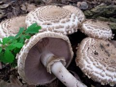
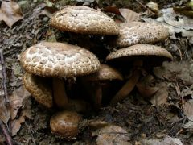
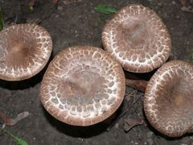

Ehető
Ehető Ehető
A csiperkék körét nem jellemző tulajdonságáról kapta nevét ez a gomba. Mindig több példány jelenik meg szorosan egymás mellett. A nagyobb termetű csiperkékhez tartozva egy népes csoport súlya a kg-ot is meghaladja.
Kalap: kalapját koncentrikus körökben nagy durva barna pikkelyek borítják, közöttük a fehér kalapbőr látszik.
Lemezek: fiatalon szürkés rózsaszínűek, később sötétbarnák.
Tönk: lefelé orsósan elvékonyodó, kettősperemű, de gyenge gallér, számos pikkelykés öv van.
Hús: az egész gomba érintésre, sebzésre erősen vörösödik, ez leginkább fiatal lemezein, kettévágva húsán tűnik fel. Ez vágásra fehér, de gyorsan vörösödik, majd barnul. Kellemes enyhe illata van. Jóízű.
Előfordulás: júliustól novemberig, mindig erdőkben, ligetekben terem, elterjedt, de nem gyakori, kímélendő gomba.
Természetvédelmi értéke: 5 000 Ft
  